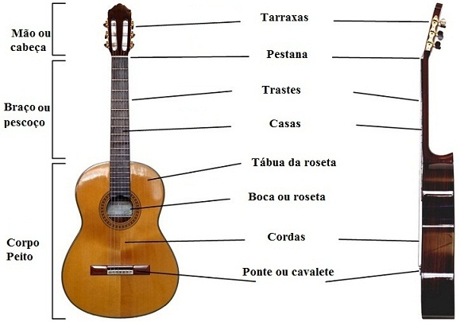
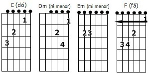

O violão é um instrumento que todos podem aprender a tocar. O instrumento ajuda a pessoas se inserirem no mundo musical, caso esteja começando do zero. Para tocá-lo não precisa necessariamente participar de aulas particulares, pode-se começar a treinar sozinho(a) com suas músicas preferidas e de forma online.
APRENDA SOBRE O VIOLÃO
Passos para começar a tocar violão:
Saber se quer tocar sozinho ou com um auxílio de professor:
É necessário saber se você quer atuar de forma profissional ou somente por um hobby. Caso queira participar de apresentações, orquestras o auxílio de um professor é essencial, para te ajudar a tocar de maneira correta. Se pensa apenas em tocar suas músicas favoritas para si mesmo e se não quer gastar dinheiro, aulas onlines irão te ajudar.
Escolher seu estilo musical:
Existem vários estilos musicais para serem tocados com o uso de violão, comopop, dedilhado, sertanejo,reggae, música clássica, entre diversos outros estilos.Escolher seu preferencial entre eles ajidará para ser direto em suas aulas e práticas, mas caso deseje treinar um pouco de cada, o seu violão precisará se ajustar a cada estilo.
Seguir um passo a passo:
Para entender os métodos básicos do violão, os passos a passos irão te ajudar a compreender melhor e tornar mais fácil tocar o instrumento, por isso é importante ter uma base, para não pular as fases de aprendizagem.
PARTES DO VIOLÃO:

Tarrachas;
Trastes;
Casas;
Braço;
Boca;
Corpo;
Tampo;
Cavalete;
Cordas.
FUNÇÕES DE CADA MÃO:
Mão Esquerda - tocar acordes e notas.
Indicador
Médio
Anelar
Mínimo
Mão Direita - executar batidas, ritmos e dedilhados.
Polegar
Indicador
Médio
Anelar
A CIFRA é o nome do processo que representa os ACORDES por meio de LETRAS, NÚMEROS e SINAIS. São sete notas musicais, que designam os acordes feitos sobre elas, representadas por meio de letras maiúsulas.
NOTAS MUSICAIS:
DÓ - C
RÉ - D
MI - E
FA - F
SOL - G
LÁ - A
SI - B
ACIDENTES MUSICAIS:
m - menor
# - sustenido, aumenta a nota em 1/2 tom
b - benol, baixa a nota em 1/2 tom
7 - nota com sétima
COMO EXEMPLO:
A-LÁ MAIOR
Am-LÁ MENOR
A#-LÁ SUSTENIDO
Ab-LÁ BENOL
A7-LÁ COM SÉTIMA
B-SI COM SÉTIMA
ACORDES:

VIOLÃO EM MINHA VIDA
Comecei a praticar violão em pouco tempo e apesar das dificuldades, o tempo em que passava praticando me proporcionava calma, controlava o meu nervosismo e me permitia viajar sem sair do lugar, por isso tocar violão tornou-se meu hobby. Participava de aulas particulares e agora pratico somente em casa.
Espero um dia voltar com as aulas para participar de apresentações, acho lindo quem toca. Já pratiquei outros instrumentos, por isso quando me inseri no violão foi um pouco mais fácil, ainda assim é um instrumento que necessia de atenção e habilidade.